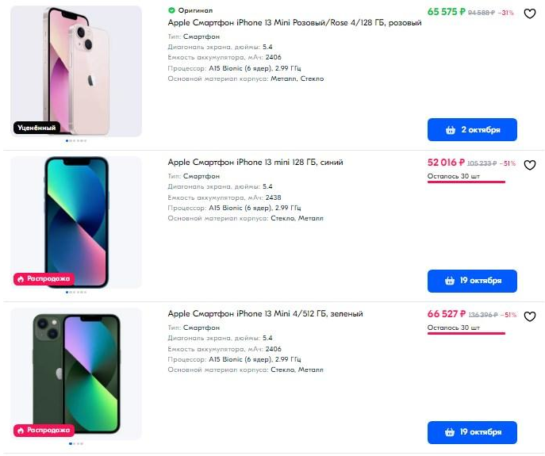
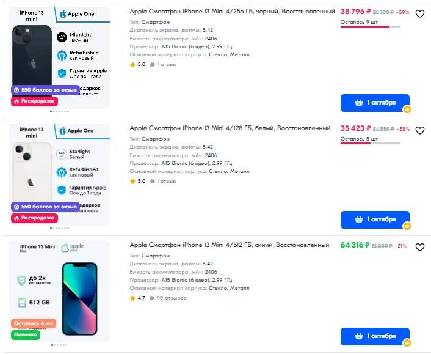

Современные смартфоны выпускаются в различных модификациях для удобства пользователей, и iPhone 13 Mini является хорошим примером такого подхода. Этот компактный телефон представляет собой уменьшенную версию своего более крупного родственника, «Айфона 13», но многие задаются вопросом, имеет ли смысл выбирать Mini для покупки и в чём ключевые различия между этими двумя устройствами.

Основные различия в размерах и дисплее
Первое, что стоит отметить при сравнении этих моделей, — это габариты и экран. iPhone 13 Mini значительно меньше: он оснащён 5,4-дюймовым дисплеем против 6,1-дюймового у старшей версии. Этот размер имеет как плюсы, так и минусы. С одной стороны, миниатюрный формат делает устройство более удобным для ношения в кармане или небольшой сумке. С другой стороны, увеличенный экран iPhone 13 предоставляет больше места для работы с приложениями и просмотра контента.
«13 Айфон Мини» идеально подходит тем, кто ценит компактные устройства. Меньший размер дисплея не означает ущерб качеству: оба телефона имеют OLED-экран с поддержкой HDR, поэтому изображения и видео выглядят замечательно на обоих устройствах. Главное различие — это, конечно, площадь дисплея, где смартфон в выигрыше за счёт большего размера.
Производительность и автономность
Что касается батареи, старший «Айфон 13» здесь занимает лидирующие позиции. В нём установлена аккумуляторная батарея с большей ёмкостью. Это позволяет устройству работать продолжительное время без подзарядки. У iPhone 13 Mini автономность меньше, что обусловлено его компактными размерами.
Если пользователь часто работает в приложениях, смотрит видео или активно пользуется интернетом, то разница в продолжительности работы может оказаться существенной. Но для тех, кто предпочитает компактные гаджеты и не против более частой подзарядки, Mini будет вполне удобен.

Камера и возможности съёмки
Фотографии и видеосъёмка — ещё один ключевой момент, который следует учитывать при выборе между моделями. Оба устройства оснащены двойной системой камер с широкоугольной и ультраширокоугольной линзами. Они также поддерживают ночной режим, который делает снимки при слабом освещении более чёткими и яркими.
Разница заключается в том, что iPhone 13 имеет некоторое преимущество благодаря улучшенной стабилизации изображения. Это позволяет получать более качественные снимки при движении или в нестабильных условиях. Кроме того, большая модель предлагает больше места для хранения снимков и видео высокого разрешения, что может быть важно для любителей мобильной фотографии.
Сравнение возможностей камеры:
Таким образом, если основной приоритет — это фотографии и видео, то старшая версия выглядит более предпочтительно. Но iPhone 13 Mini также остается достойным выбором с высокими фотографическими возможностями.
Выбор и стоимость
Не менее важно учитывать и финансовый аспект. iPhone 13 Mini стоит немного дешевле, чем старшая модель. Поэтому за более скромную сумму пользователь получает очень мощное устройство с отличной производительностью и качественной камерой. В то же время дополнительные трудности с переносом контента на меньший экран и менее длительная работа батареи могут оттолкнуть некоторых пользователей.
Причины выбрать iPhone 13 Mini:
Причины выбрать iPhone 13:
Вопрос выбора между устройствами сводится к личным предпочтениям и приоритетам пользователя. Оба смартфона обладают высокими характеристиками и способны удовлетворить потребности самых требовательных пользователей. Mini подходит тем, кто выбирает небольшое устройство, а старшая версия — ценящим длительную автономность и большую площадь дисплея. Подобрать гаджет можно на «Озон» https://www.ozon.ru/category/iphone-13-mini/.